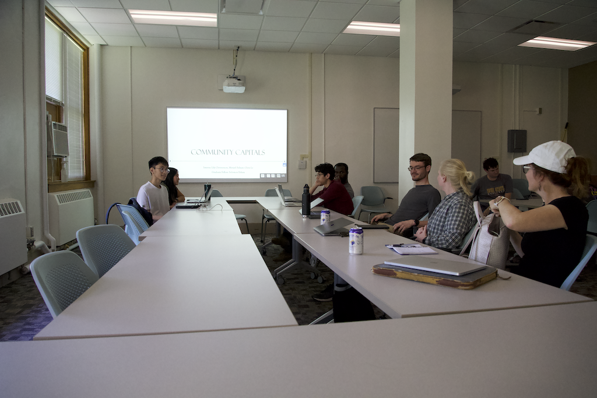

Lily’s Midpoint Reflection
What I have been learning so far
I have grown my coding skills in the first few weeks of the DSPG Program. We first started with a few courses on DataCamp. It gave me a good foundation for the type of coding that I would be using. I got assigned to the Capitals project, and my team and I had our first two meetings with our clients. We were assigned to focus on Social and Cultural Capital. I had to read some articles before I started my research on Social and Cultural Capital. Throughout my research, I found that Cultural measures were slightly more difficult to find than Social measures. I had to think outside the box for new, creative ways to measure Cultural measures.
I have gained skills in data cleaning, visualizations, and client meetings. When it comes to cleaning a dataset, you have to be very careful and observant. It is always important to keep a copy of the original dataset just in case something were to go wrong when cleaning. I worked with employment shock datasets. While cleaning the datasets, I realized there were duplicate rows. I had to look closer at the dataset to determine the best way to eliminate them. The only difference between the duplicates was that some points didn’t have information in the industry column, whereas others did. As I was going through that process, I also looked at the unique variables. I found that some names represented the same industry or city but were slightly named differently. In another dataset I have worked with, multiple rows were not needed. The rows had the same beginning so I learned how to get rid of rows based on the unique character that the rows had.
Code and Visualization
{kind=link}
This wordcloud shows which cities in Iowa had the most WARN employment shock cases from 2005 - 2024.
{kind=link}
This lollipop plot shows the number of employees who lost their jobs from the year 2005 - 2024.
{kind=link}
This lollipop plot shows how a notice type impacted counties in Iowa.
{kind=link}
This treemap shows the Simpson Index race for cities in Iowa. Blue represents the largest race diversity, and orange represents the smallest.
This map shows the public art less than 50 per 10,000 in cities in Iowa.
New directions of learning
Throughout the program, I have been looking into new ways to visualize data. I think it’s important to know many different ways to visualize data. Along with that, it is equally important to know when and where to use which type of visualization. For example, it is important to know if you should use a bar chart, pie chart, wordcloud, time plot, map, etc.
Skills I hope to improve for the rest of the program
I want to continue to improve my data cleaning, visualization, and group weekly blog. I hope to keep improving my coding skills in data cleaning and creating new types of visualizations by finding new, efficient ways to code. I also want to figure out better ways for my group to work on the weekly blog posts. We have figured out the dependencies part and now we need to be more aware of the codes that we want to run.
Goals met?
I believe I am meeting the goals that I outlined at the start of the program. I am improving my coding skills every day, building up skills for client meetings, getting more comfortable speaking in front of a group, and trying new coding approaches.
Community Capitals Team and Clients: 